Earth Day is a nice day to start something new. I took the Amtrak from Moynihan to New Haven,
joining my crew on the tug James Charles (no not that one...).
We started the trip at Gateway Terminal in New Haven, lightering road salt from a giant ship to
Newtown Creek in New York (it runs between Greenpoint and Long Island City, and is super gross).
Here's the ship and the salt, it looked pretty sick:
We got some ship assist from the Ellen McAllister and opined how we were jealous of her z-drives.
I was also happy to add the Q Bridge in New Haven to my bridge collection. (Currently pitiful but I am trying to find more cool bridges in the world).
(not my photo)
Here is some cool Newtown Creek graffiti:
That night, Adam the Engineer made a very delicious meal
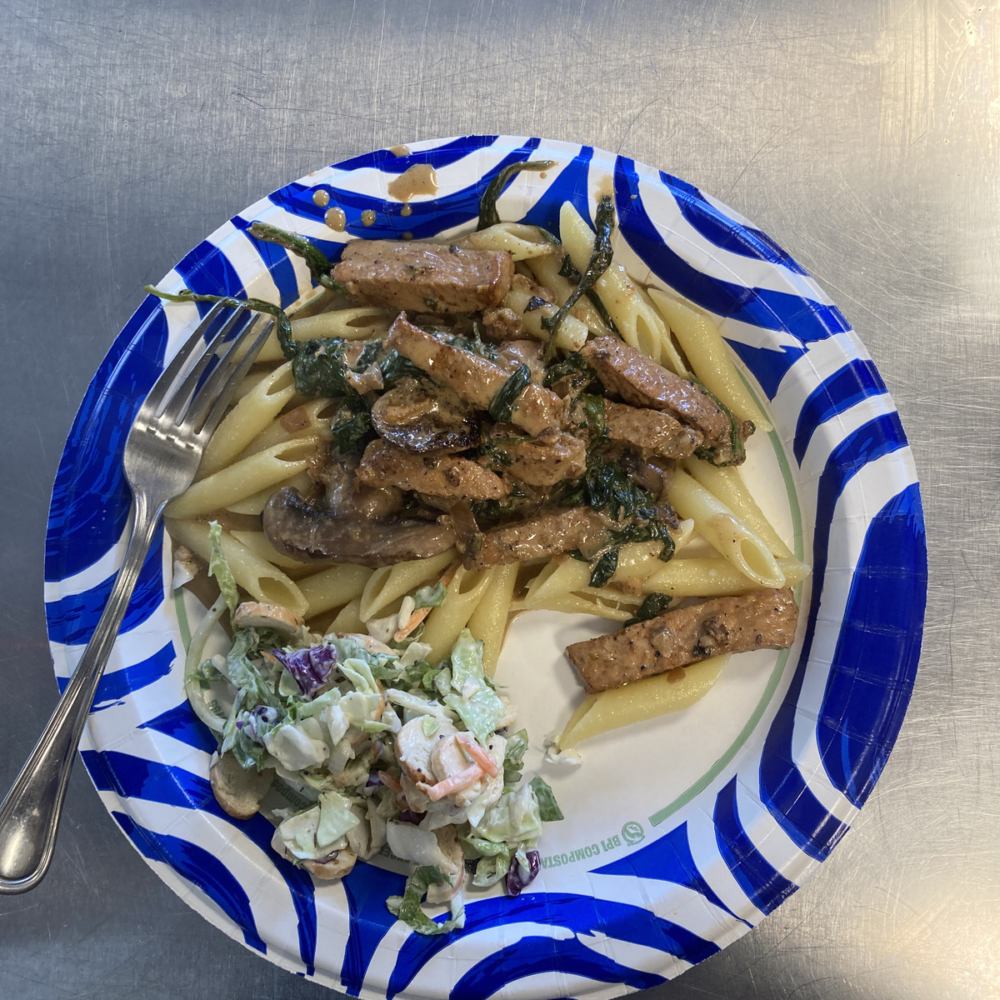
Stuff happens
I was just finishing scrubbing the galley table in the James Charles to the point where I could see my own reflection in it, when a rumor whizzed right by my ear.
We were headed to the yard in Fall River right away, moving all of our shit to the Maureen,
and starting a very long journey to some undisclosed location for a job. I couldn't discern whether this was true or just a joke, but soon enough we had reached my old stomping grounds at the yard.
Grub
Given my nature as a mere deckhand, I am the designated chef for our crew. And as you can imagine we get pretty hungry. Every night I stood at the giant chest freezer staring in, thinking something to the effect of "fuck, what am I going to make tomorrow?". One thing's for certain, this is definitely preparing me to feed my children one day lol. #chefpapa
Also, grub shopping is a whole other phenomenon which I will discuss in due course.
Meals
Stir Fry
Chicken breast (marinated in soy sauce, sesame oil, chili oil), mushrooms, bell peppers, onions, broccoli.
Overcooked mushy Jasmine Rice. Yucky!!!
Lesson learned: don't make stir fry if you don't have corn starch for a slurry, and never trust Jasmine rice when she tells you she needs a 2:1 ratio of water, that is crap, it's always 1.5.
Taco Night
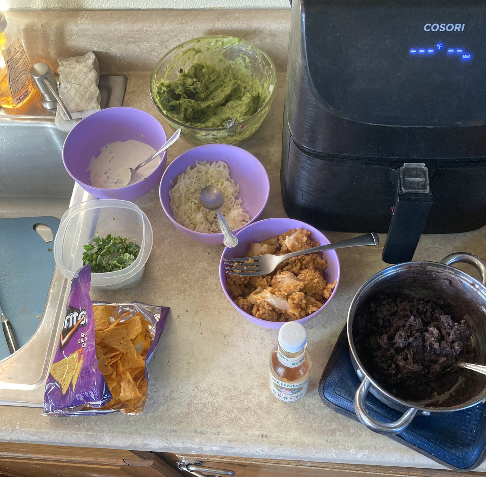
Tyson Chicken... I forgot to take meat out to thaw :-(
Black beans with garlic cloves and oregano. Just try it friend, stop dumping cumin in things and use oregano instead.
Guacamole. Dude all you need is a ripe avocado, red onion, lime, and some salt and pepper. It's literally delicious. OK fine a little cumin too, just a little.
Crema... alternative. Mayo, lemon, raw garlic clove, garlic powder, and throw that boy in the fridge. Thin it out with water if necessary. We had no sour cream and necessity is the mother of invention.
Baked lemon salmon with roasted root vegetables and pilaf!
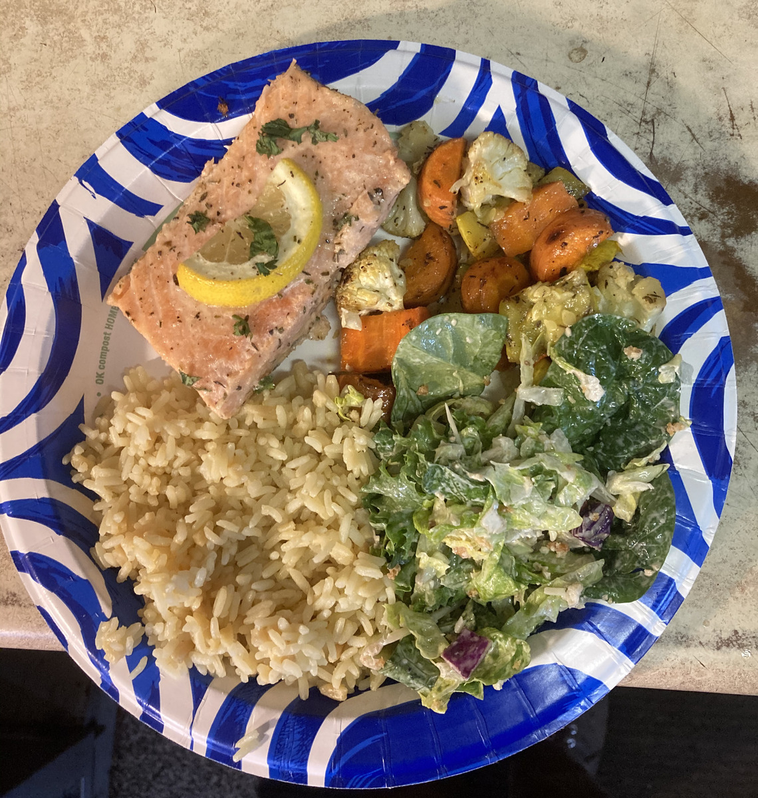
Toss some zucchini, carrot, and cauliflower in olive oil, salt, and pepper, and bake those fuckers.
For the salmon, mix some olive oil, lemon juice, italian herbs, garlic powder, etc, spread it all over and bake. Put a lemon slice on dat too why not. Top with parsley, to emphasize you r eating something healthy
It's actually very simple to cook salmon, I had no idea. I just had to keep an eye on it so it didn't overcook, take it out when the center starts getting flakey and not too jiggly.
It's just Near East pilaf dawg
Shrimp Fettuccini Alfredo
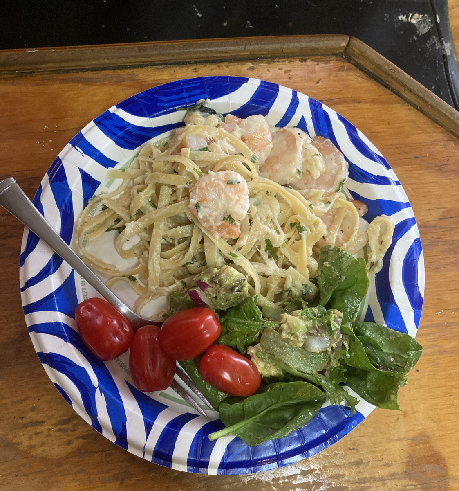
It turns out the magic behind alfredo is emulsifying a bunch of parmesan into cream and butter. No roux or anything, just pure parmesan. Add a shit ton of garlic too. Other than that the main thing to look out for is not overcooking the fettuccini.
I received classified information that our captain, Shep, really likes Alfredo, and will devour it even though he's trying to be healthy. I can neither confirm nor deny this. Also our mate Ally does not like cherry tomatoes which is why they are on the side.
Sausage and Peppers with Italian Salad
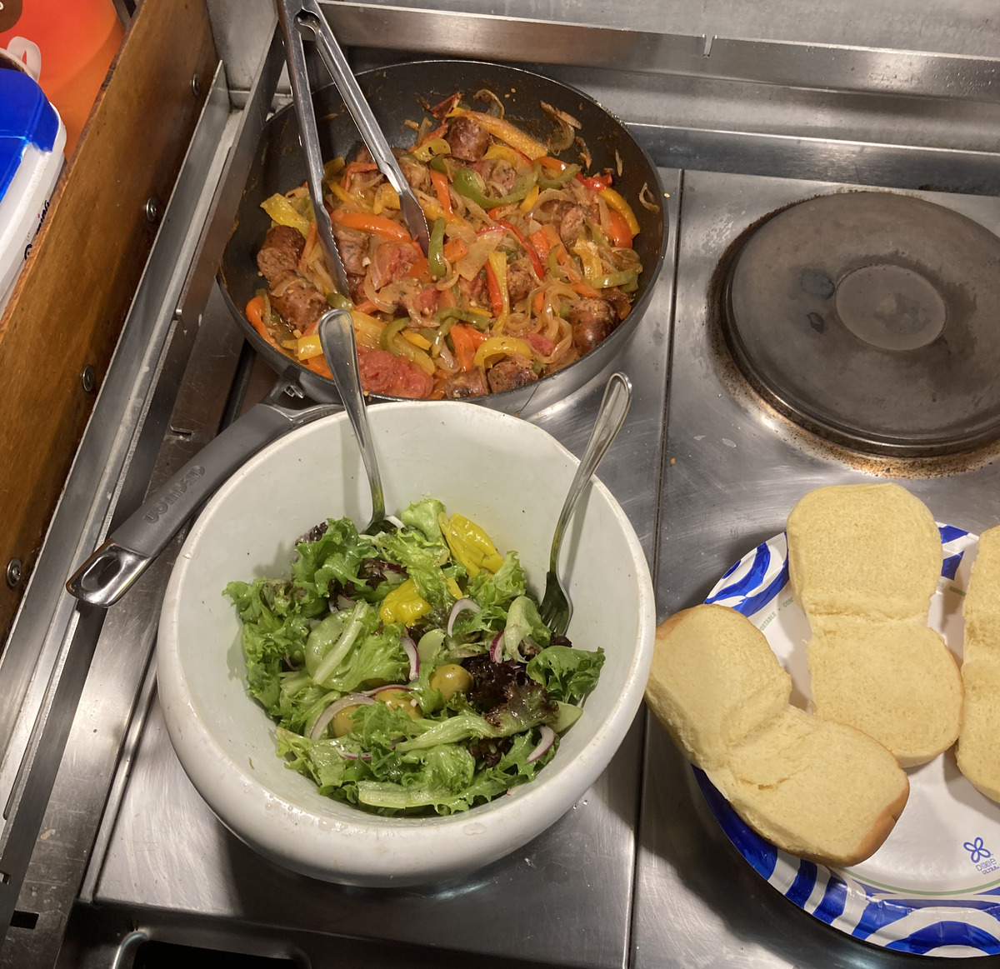
I didn't have much time to make dinner on this day cause we were transferring fuel to our sister the Brinn Courtney (pics elsewhere!), so a simple meal had to suffice. Also our sub rolls turned out to be moldy, wtf!!! So I had to use hamburger buns blergh.
The salad has olives and pepperoncinis, and is dressed with red wine vinegar. I also wanted to put chickpeas in it. It feels vaguely Italian to me...
Not much of a recipe here, just cook stuff. Be sure to serve with mozzarella or provolone.
Shepherd's Pie
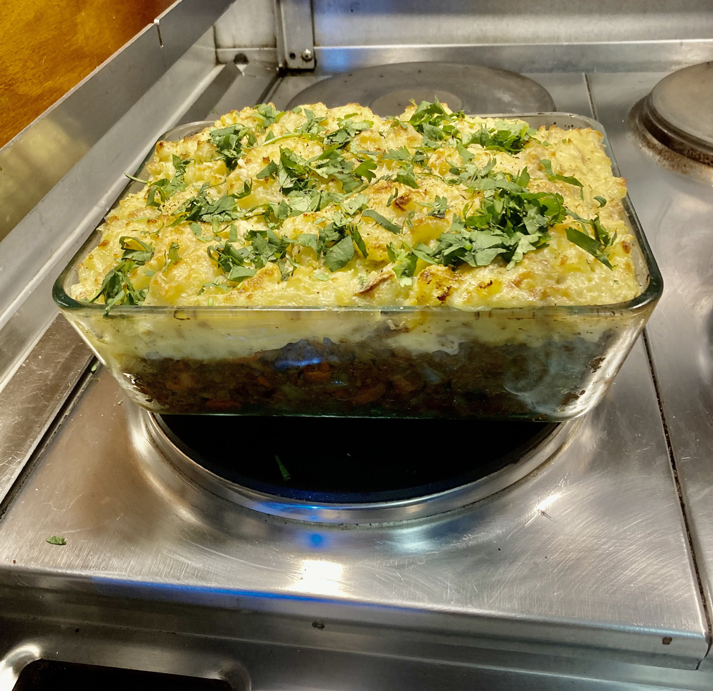
Do I look like the kind of guy who knows how to make Shepherd's pie??? Well I guess it's technically "Cottage Pie" because I used beef, but that's neither here nor there. The point is I have never ever made this before, in fact I've only even eaten it once or twice. Now you can just tell by looking at me that I can make a mean Shepherd's pie :P.
It starts with making really delicious mashed potatoes. Bring some gold potatoes to a boil in cold water (this will make them cook more evenly rather than just overcooking the outside), then boil for like 15 minutes (until they're cooked friend). I did this ahead of time, simplifiez ur life. Mash, add butter, heavy cream, parmesan cheese, salt, pepper, and a bit of ranch (I did this out of necessity but it ended being a great idea). Keep adding and mixing until it's creamy and good (like so good you want to eat it all up immediately).
Now for the other half. Fry up some ground beef until brown. Add mirepoix of carrot, onion, and celery. I wanted big enough pieces that they wouldn't just disappear. Carrots take a long time to cook man, make sure you give them plenty of time or cut them smaller. Season with better than boullion beef, worcestershire sauce, tomato paste, and thyme -- this is what made it delicious, skip at your own peril. Of course some salt/pepper/garlic powder/paprika/etc is welcome as well, and some garlic cloves. Now add flour (a big scoop, like 1/4th cup). Make sure it tastes good and rich, and is not dry, but also not watery (the liquid won't evaporate while baking, this is basically your final product).
In a baking tray (use a glass one pretty please), layer your meat mixture, then mashed potatoes on top. Sprinkle with parmesan. Bake until you're satisfied. Sprinkle parsley on top to show them you're not a deranged heathen.
Chicken Tinga Quesadillas
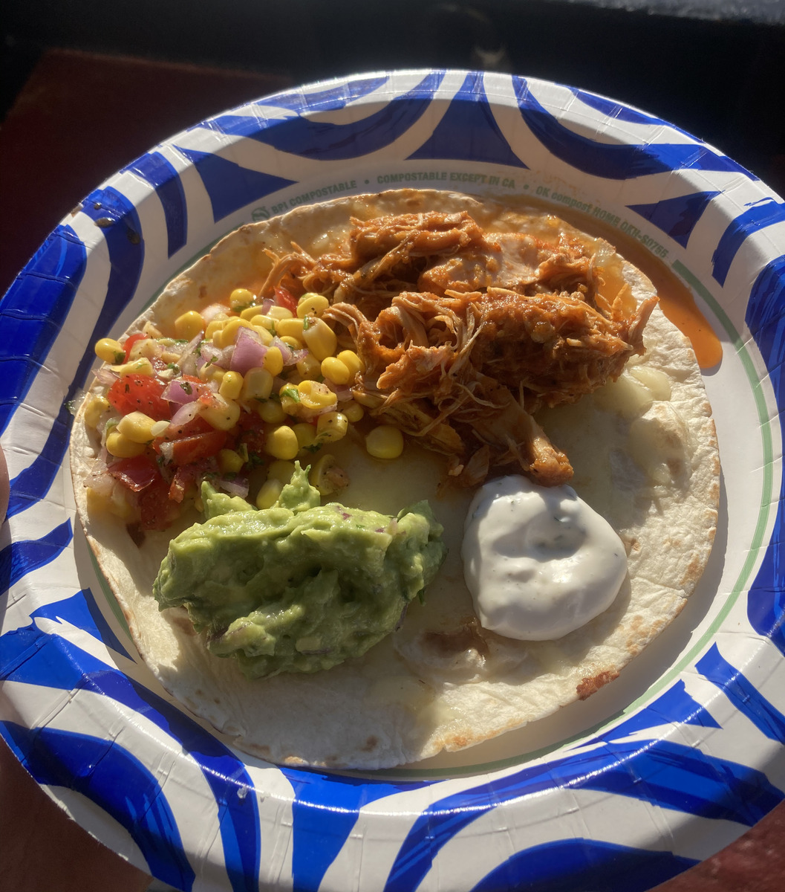
Chicken Tinga is one of my favorite things in the whole world, and ever since I moved away from the taco truck I used to get it from my melancholy has been unconsolable. Apparently it is really easy to make, I can't wait to show all my friends (what? you have friends?)
Chop two white onions into chunks and char them with some garlic cloves, add to a pot. Char some tomatoes, and add them to the pot as well. Now add the key ingredient, chipotles in adobo. You can always add more later so I would start with a few at a time, they can get spicyyy. Add better than boullion (or chicken stock powder or whatevs), and maybe a bit of water depending on how many tomatoes you have. Salt, pepper, garlic powder, cumin, oregano, paprika, etc. Immersion blend it all together. (I also had some dried ancho chiles laying around so I hydrated one in boiling water and added it, but not sure it made a huge difference). Add chicken thighs, and cook for 15 minutes in an Instant Pot. Shred with a fork!
Corn salsa is always yum, with red onion, tomato, cilantro, lime, etc.
Ally really liked this one, she said I should definitely make it again. I agree with her :P.
Coconut Rice with Garlic Lime Shrimp
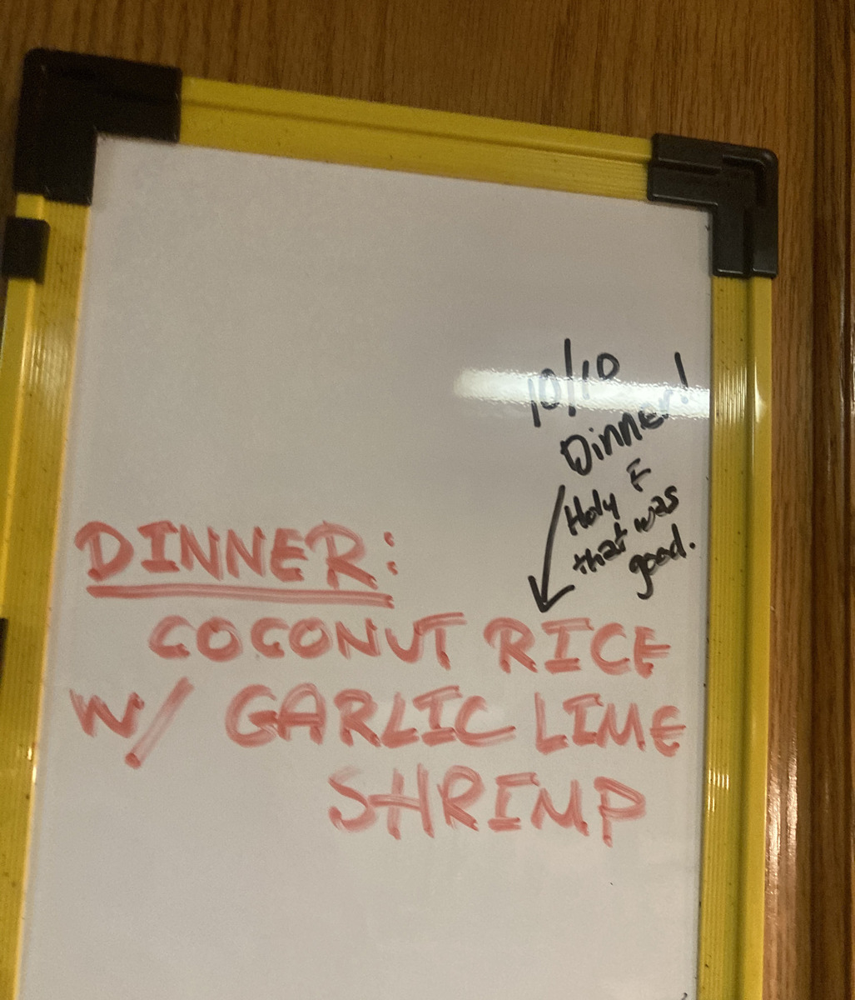
Drat, I forgot to take a pic!
For the rice, rince it super thoroughly to remove starch, and add to rice cooker with a can of coconut cream. Supplement with water to reach 1:1.5 ratio of rice to liquid. Salt, pepper, garlic powder, onion powder. Surprisingly this worked very well, the texture was perfect. But I can't promise anything... it might've just been luck.
For the shrimp and veg -- slice up some bell peppers and sautee them to get some of the rawness out, then set aside. In a bowl combine soy sauce, juice of a lime or two, honey, chili oil, sesame oil, garlic powder. Fry up diced garlic in a pan until fragrant, and add the sauce. While simmering, add corn starch slurry (1 tbsp each water and corn starch whisked together). Keep adding more constituent ingredients of the sauce to reach desired quantity, consistency, and flavor. Add shrimp (already cooked), and bell peppers. On the side, steam broccoli. Combine, add chili flakes, and season to taste one last time (adjust honey, lime, and garlic powder ratios).
Red Sauce Spaghetti and Meatballs
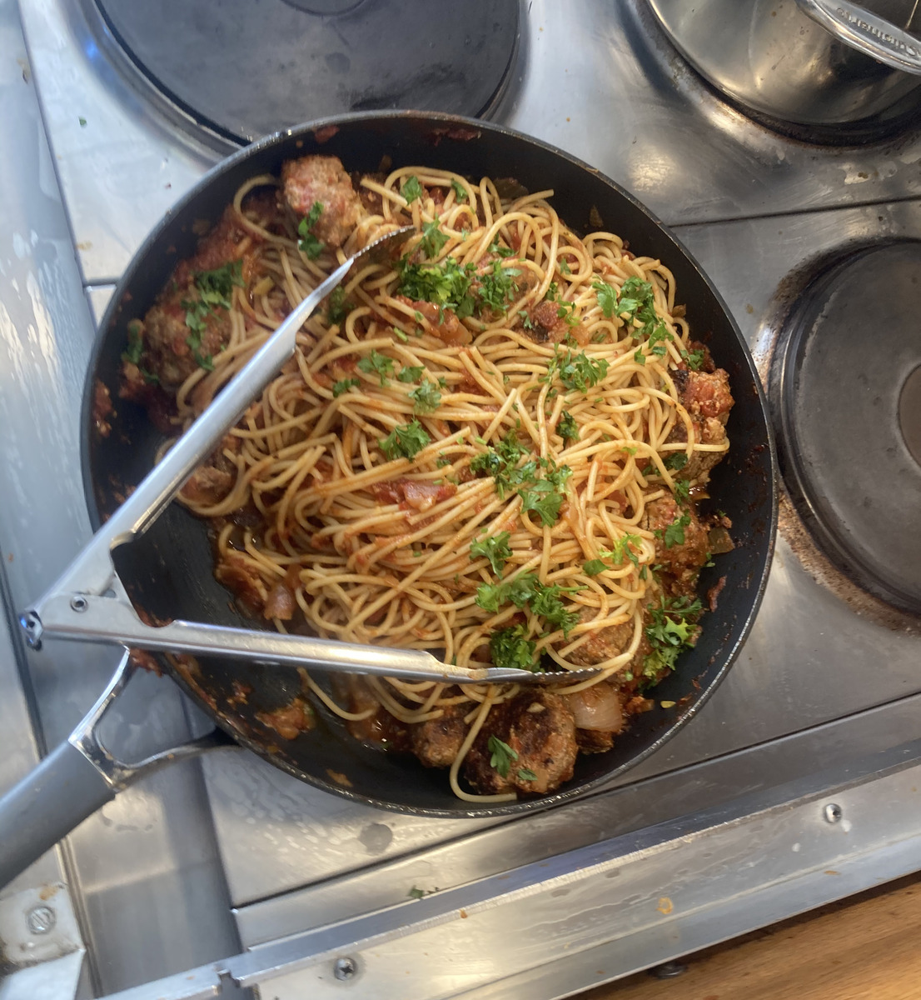
I really felt like a grandpa making these meatballs, check it out. Combine a 1 lb. pack of ground beef and a 1 lb. pack of ground sausage. Make a panade by soaking some bread in milk, then add it in. Add 2 eggs. Finely dice some onion and garlic cloves, and add those in. Add parmesan, oregano, basil, parsley, garlic powder, pepper, salt. Mix thoroughly until it's all incorporated. Form golf ball sized meatballs on a baking tray and bake at 350 for 30 mins (I ended up turning it up later to try to get more browning).
Now for the red sauce. It actually came out really good (before I ruined it) so listen up kids. I read an Italian gentleman's comment on reddit about how his grandma used to add various cuts of beef with the bone into the sauce depending on what they had, and every family member would come up to the pot and add this and that to it for themselves to eat later. I thought it was sick. My main takeaway was that I should add beef better than boullion into the sauce to try to imitate this. Alright so dice up an onion with some garlic cloves and sautee until fragrant. Add a can of whole peeled tomatoes. Add the better than boullion. Add oregano, basil, and garlic powder. Now I also read another recipe, from which I decided to add half an onion (whole!), and a few tablespoons of butter. I also threw in some loose cherry tomatoes I had left over. Simmer for as long as you can afford, mixing and scraping. When done, use immersion blender to blend it all together (I tried to leave it chunky, but no whole pieces of onion or tomato). Add meatballs from oven and simmer them with the sauce (though some would keep them separate to preserve the crispiness).
Ok now don't do what I did afterwards. I threw a whole box of cooked spaghetti into the sauce and mixed everything, and it ended up not having nearly enough sauce. You need to have a shit ton of sauce dude, that's the whole point. So either keep it separate and ladle it on top, or make way more sauce. And as always don't overcook your pasta you numnuts.
I also made garlic bread with this which was yummy but not enough
Avgolemono with Roasted Lemon Potatoes, Asparagus, and Greek Salad
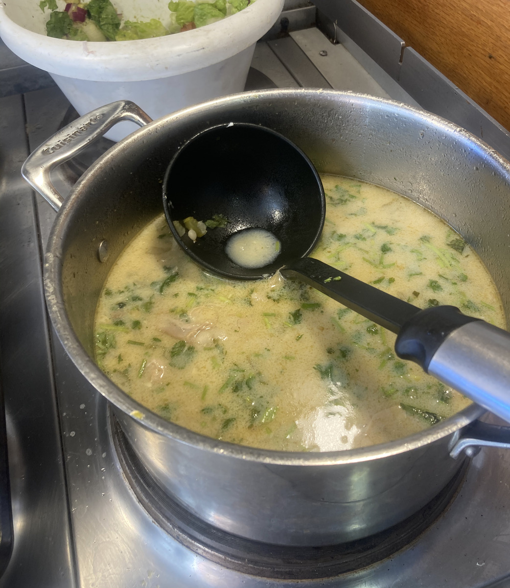
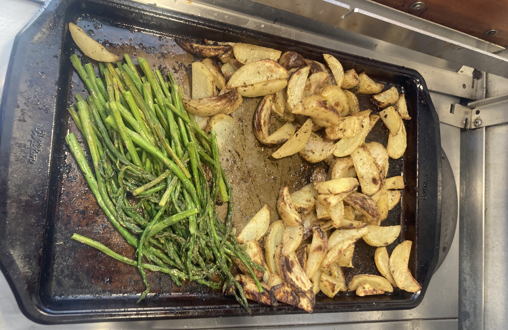
I don't think anybody really wants to eat soup on a boat in the middle of the Atlantic Ocean but I was kind of running out of ideas, sorry guys.
Render the fat from skin-on bone-on chicken thighs until brown on both sides. Remove to separate plate. Reserve most of the fat in a separate bowl, to be used for potatoes. Dice up onion, carrot, and celery (mirepoix), sautee, then add garlic and sautee, then add back chicken. Stir and scrape to release the fond and make sure nothing burns. Add water as desired for soup, keeping in mind it'll reduce, but also that chicken bones are adding illusory volume which will disappear once we remove them. Bring to a simmer and keep it that way until chicken and vegetables are cooked. Note: skim any excess fat from the top. Remove the chicken and take the meat off the bone (and discard skin), adding the meat back to the soup. Add grain of choice, e.g. rize, orzo, cous cous, etc. Season the soup, e.g. parsley, oregano, thyme, bay leaf, garlic powder, etc. Once the grain is cooked, the last step is to whisk two eggs with the juice of a lemon, and temper it with a ladle of broth at a time, then add back in. Finish with chopped parsley and black pepper.
For the lemon potatoes: parboil potatoes by putting them in cold water and bringing to a boil. Slice into wedges and layer in a sheet tray. Take chicken fat and mix with juice of a lemon, rosemary, basil, thyme, parsley, oregano, black pepper, garlic powder, paprika, etc. Salt and pepper the potatoes (they really like salt). Then pour the chicken fat mixture and cover all potatoes thoroughly. Roast in the oven for a while, probably start at 350 but raise to a higher temp to brown later.
As an American, I believe to make a salad Greek you add black olives, red onion, and feta cheese into it. I didn't have feta cheese though. And nobody thought to buy cucumbers on this fucking boat. If I see one more bagged salad I'll....
Salsa Verde Carnitas Enchiladas, Mexican Rice, and Corn Black Bean Salad
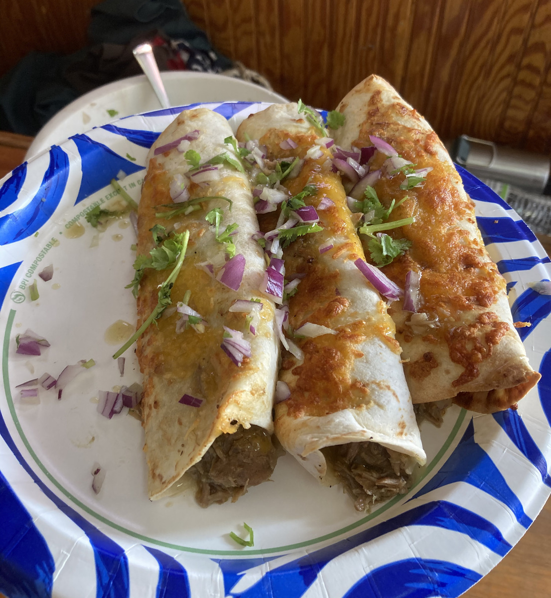
I finally manned up and decided to cook one of the various meats from our chest freezer. Take pork butt (I used 2.5 pounds) and cut into 2-3 inch cubes. Sear in oil to develop some browning. Throw in Instant Pot with a few garlic cloves and a can of salsa verde (cheating!!! we had no produce. It's mostly tomatillos and jalapeño garlic onion etc), set for 1 hour. (Do this ahead of time cause you’ll need to work with it more later). It’ll come out with a pretty liquid sauce and still in chunks, so simmer it until the liquid reduces more or less to a sauce consistency. Start assembly line for enchiladas. Warm up a tortillas until pliant, add carnitas, add a bit more of the sauce, add diced red onions, add cheese, roll (towards you). Keep doing this until a batch is ready to bake. Put in air fryer, ladle more sauce on each, sprinkle with cheese, bake at 350 for 5 mins. To finish ladle some more sauce, sprinkle more red onions and some chopped up parsley. Done.
Mexican rice: wash rice thoroughly, toast it, add diced onion and few cloves of garlic, can of tomato sauce, water, 2 tsp of tomato boullion, oregano. Cook!
Corn black bean salad with onion avocado colorful bell peppers lime cumin garlic powder salt pepper
Buffalo wangzzzzzzz
I don't have a pic and I didn't do anything innovative so I'll spare you the details. I will say I made half of the wings "jerk wings" cause we had a jar of jerk seasoning. I also made blue cheese dip by adding blue cheese into ranch lol. Oh yes and I baked the wings instead of deep frying cause I was scared. It totally does work, just takes a while. Don't forget the celery sticks.
Chicken Katsu with Japanese Curry and Rice
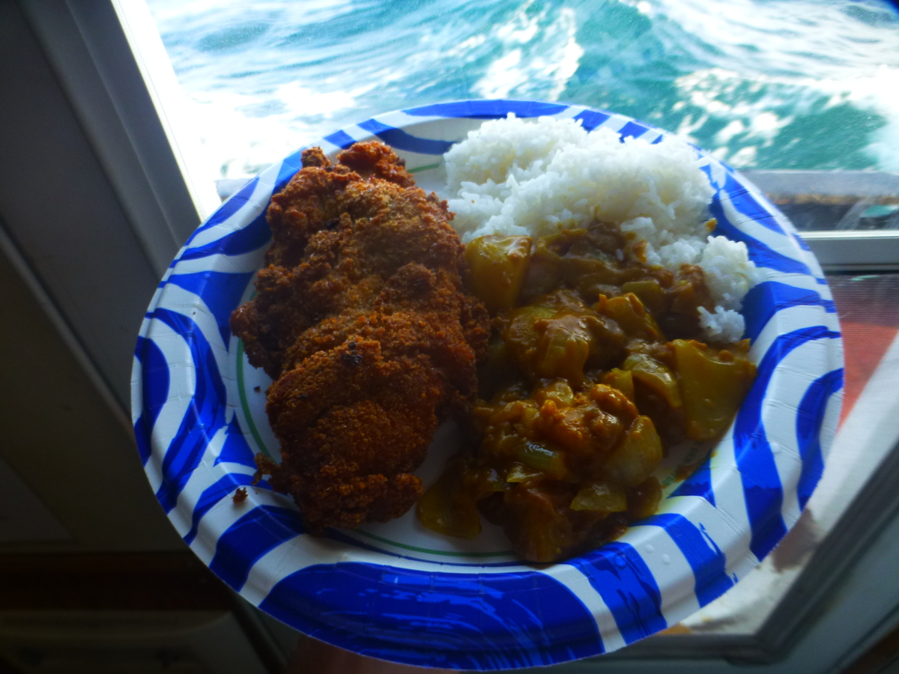
Shep suggested I make burgers, and when your captain suggests something it's probably a good idea to listen (at least that's what I think!). But there's something even more important than that, which is Mother's Day. Ally called me up to the wheelhouse and coyly asked what I was planning for dinner, given the special occasion (mother's day you twerp). It sucks pretty hard to be away from your family on mother's day, so I was overjoyed to fulfill her request of making Japanese curry with chicken katsu.
Wash white rice very well and cook 2 cups 1.5 ratio. Peel potatoes (golds) and put them in a pot submerged with water. Bring to a boil. Remove once it starts boiling and set aside for later. Now to the chicken. A package of chicken breast (1.5 lbs) will turn into 4-6 cutlets, I used two packs and it was a lot. Butterfly the breast (cut in half and unfold), bang it flat in a ziploc bag (1/2inch thick). Once they’re all prepped let’s make some panko bread crumbs. Take wonder bread, remove crusts, cube it, put in food processor to get crumbs, air fry at 350 for few mins, don’t let it get brown. Set aside. (Italian breadcrumbs worked just fine too after I ran out, even better). Get canola oil (or other high smoke point) heating in a pot, we need 350. Thermometer is crucial for this (only workaround I can see is to keep testing small bits to get a feel for oil temp). For the curry, cut onion into chunks, dice some garlic, throw into deep pan with a bit of oil until fragrant, then add water. (Ideally carrots also). Cut potatoes into nice chunks and add them in. Stir in Japanese golden curry and simmer. Don’t let the potatoes get over cooked, keep an eye and remove from heat as needed. Stir to make sure nothing burns on bottom. Add more water if needed. Keep a lid on with heat off to let it steam if needed. Now to the chicken. Set up stations, flour egg breadcrumbs. Salt a piece, dredge twice, put on done plate. Do as many as you want to prepare until oil is ready. Make sure it’s not too hot or it will burn the whole chicken instantly, make it 350. Put in a chicken breast at a time with tongs, start stopwatch immediately. Flip every 30 seconds. Spoon oil over top. Move pot off the heat if the oil gets too hot, and vice versa. Once around 5 mins have elapsed (or a little less, 4-5 mins), take it off onto a tray with paper towel and salt both sides. That’s it until done.